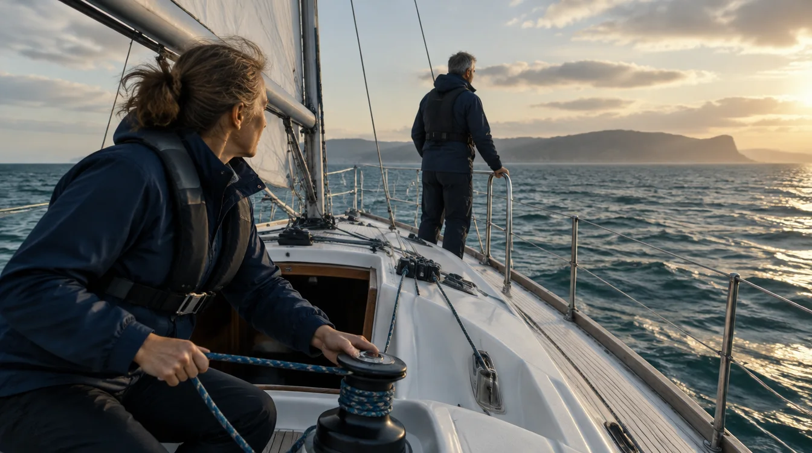
Unter Segeln
Bootswerte, Karte und Ankerwache auf einem Tablet.
Stimmungsbild, generiert
Bordinstrumente, Seekarte und Ankerwache für Android. Im Alpha-Stand.
AnsehenStimmungsbild, generiert
seaFOX liest NMEA2000 und NMEA0183 über das Bord-WLAN und zeigt die Werte auf deinem Tablet.
Karte, Batterie und Wind auf einer Seite.
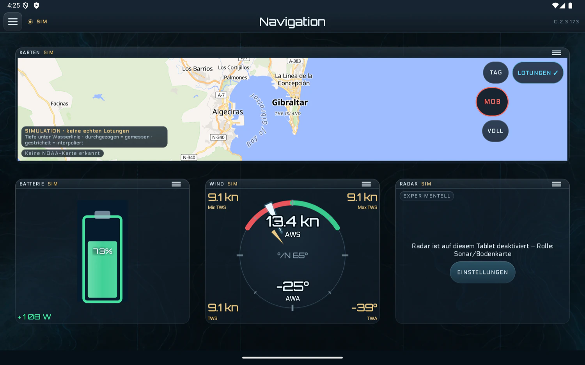
Dieselbe Seite in heller Darstellung.
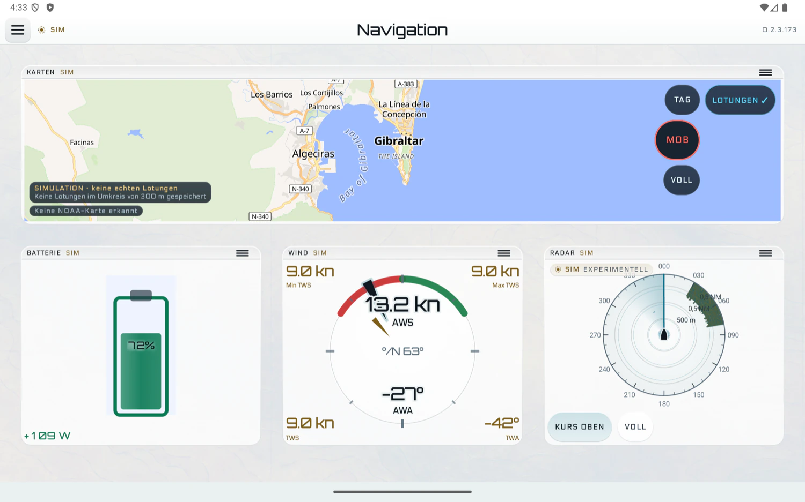
Du wählst die Anzeigen und ordnest sie selbst an.
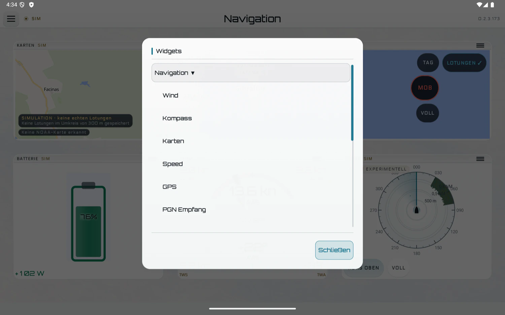
Als Anzeige im Dashboard oder im Vollbild, mit der MOB-Taste direkt an der Karte.
Die Online-Grundkarte, quer.
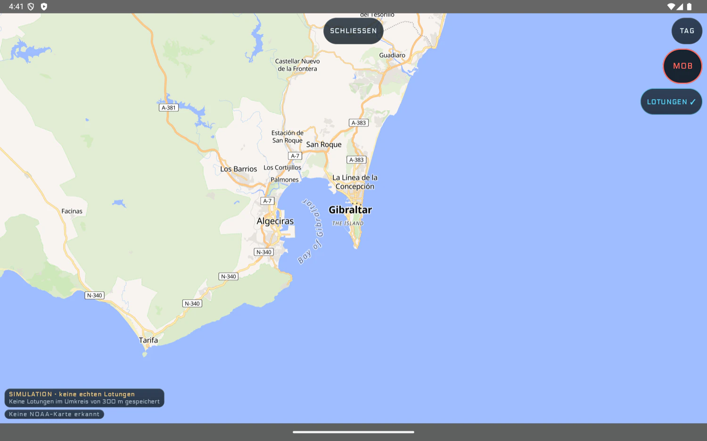
Vektorkarte aus einer NOAA-Zelle: Tiefenflächen, Lotungen, Tonnen.
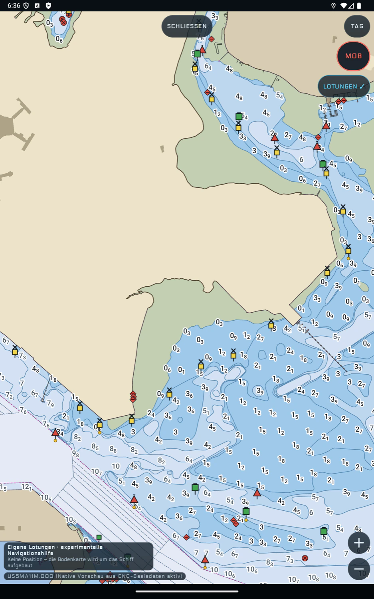
Flaches Wasser bleibt am hellsten.
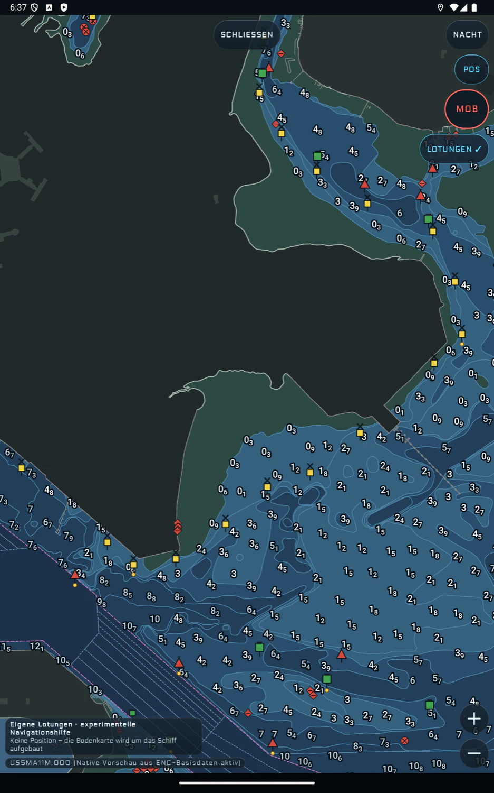
Ankerwache, Mindesttiefe und AIS unterstützen deinen Ausguck. Sie ersetzen ihn nicht.
Kette, Distanz und der Kreis um deine Ankerposition.
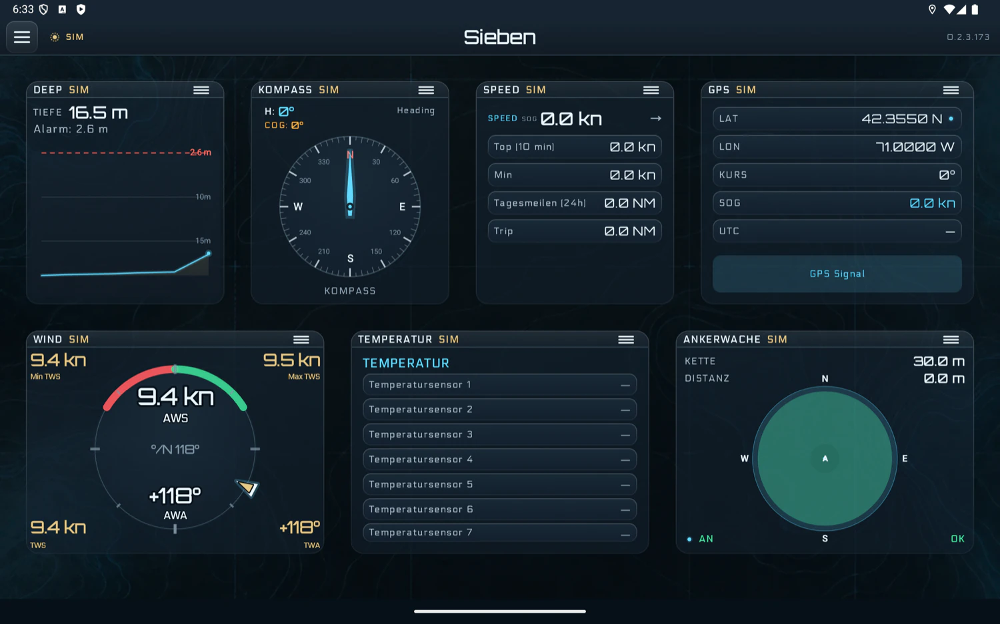
Unter deiner Mindesttiefe wechselt die Anzeige in die Alarmfarbe.
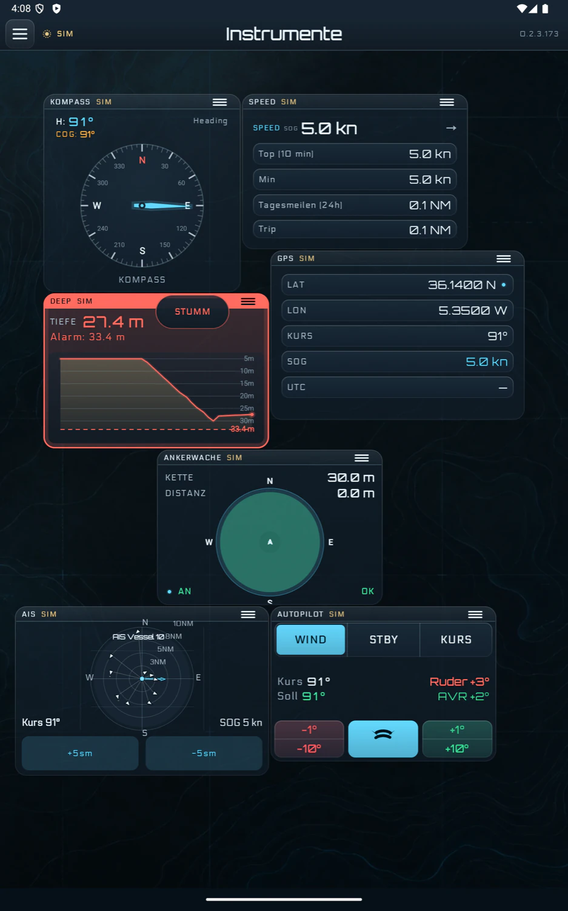
Alarm nach deinen Grenzen für CPA und TCPA.
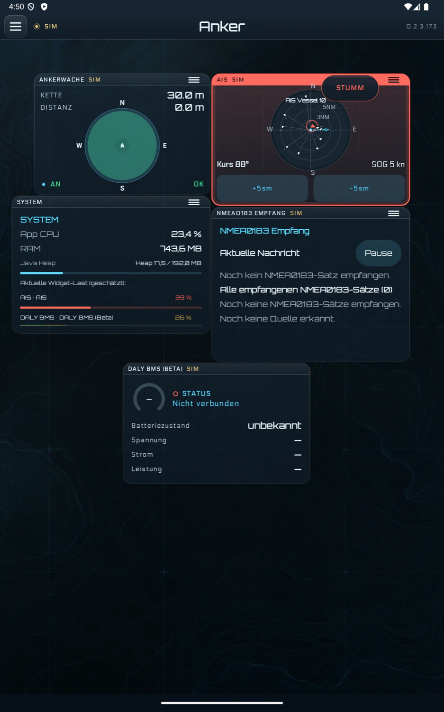
Radar, Vorausschau-Sonar und Bodenkarte sind experimentell und an Bord-Hardware ungeprüft.
Was der Strahl erfasst hat, bleibt als Mosaik stehen.
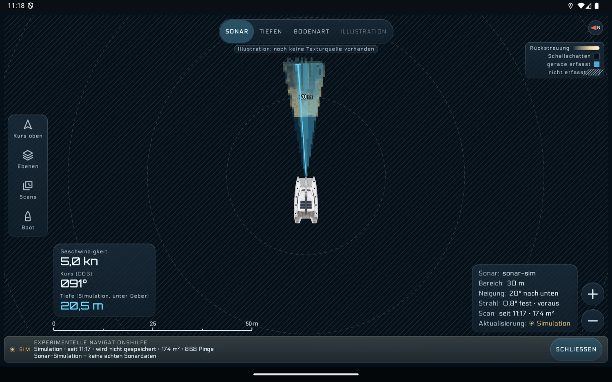
Tiefen als Fläche, mit Tiefenlinien und Maßstab.
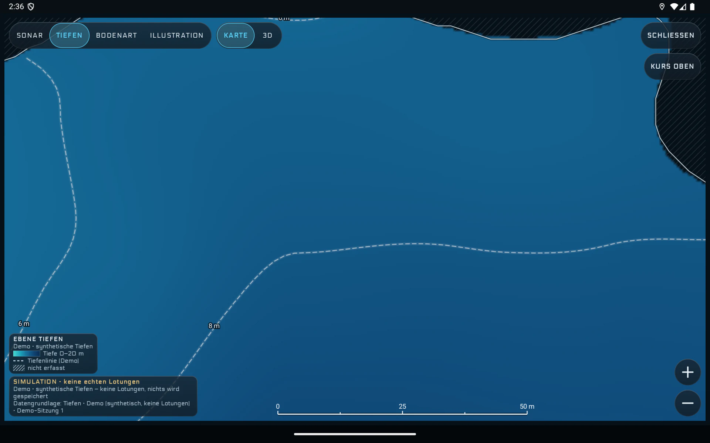
Dieselben Tiefen in 3D. Nicht Erfasstes bleibt schraffiert.
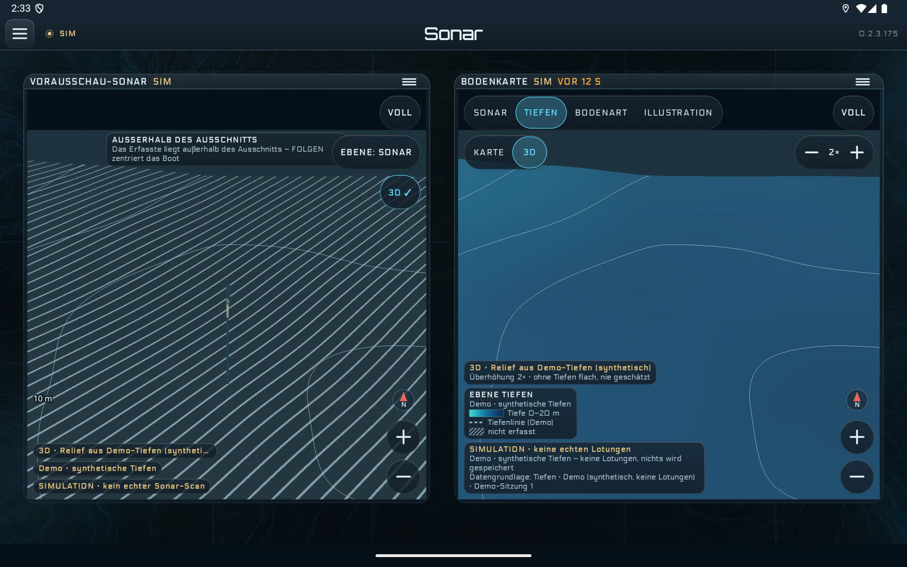

Bootswerte, Karte und Ankerwache auf einem Tablet.
Stimmungsbild, generiert
Jeder Wert zeigt seine Herkunft: live, veraltet oder simuliert.
Stimmungsbild, generiert
Gemeinsam auf die Karte und die eigenen Lotungen schauen.
Stimmungsbild, generiert
seaFOX ist kein amtliches Navigationssystem und nicht für die alleinige Navigation bestimmt.
Wer das Boot führt, bleibt verantwortlich für Kurs, Kollisionsvermeidung, Tiefgang und Wetter. Kartendaten, GPS, AIS und Sensorwerte können unvollständig, veraltet oder gestört sein. seaFOX läuft auf Android ab Version 7.0, auf Deutsch. Seiten, Anordnung und Einstellungen bleiben lokal auf dem Tablet; nur die Online-Grundkarte lädt Kacheln aus dem Internet.
Du hast ein Boot mit NMEA-Netz und ein Android-Tablet. Dann melde dich.
Kontakt im Impressum